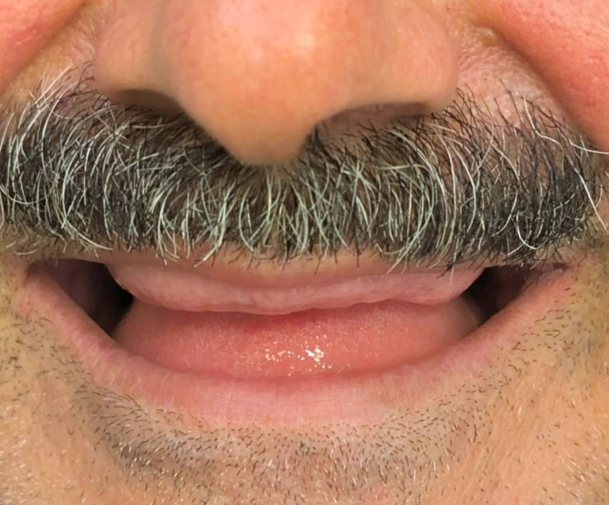

بیمار برای درمان پروتز متحرک مراجعه کرده بود. در نگاه اول و حتی بدون وجود دنچر، چند میلیمتر از لثه و ریج فک بالا در حالت استراحت لب و مقدار خیلی بیشتری در لبخند قابل مشاهده بود.
این میزان نمایش ریج، پیش از هرگونه بازسازی، یک یافته غیرعادی و قابل توجه در ارزیابی اولیه محسوب میشود.
با توجه به این وضعیت میتوان حدس زد که بیمار پیش از از دست دادن دندانها احتمالاً دارای lipline بالا یا نوعی gummy smile بوده است.
با این حال در تصمیمگیری درمانی، موضوع اصلی گذشتهٔ بیمار نیست؛ بلکه نتیجهٔ نهایی درمان است که باید از ابتدا پیشبینی شود.
در پروتز متحرک، بیس آکریلی و دندانهای مصنوعی روی همین ریج قرار میگیرند.
در نتیجه هر میزان نمایش ریج پس از درمان نهتنها کاهش نمییابد، بلکه به دلیل ضخامت بیس و حجم پروتز، به صورت برجستهتر و حجیمتر در نمای لب دیده خواهد شد.
در چنین شرایطی خطر ایجاد نمایی bulky و غیرطبیعی از نظر استتیک بالا خواهد بود؛
و این موضوع میتواند در نهایت منجر به نارضایتی بیمار و حتی عدم پذیرش پروتز شود.
در این کیس، پیش از ورود به فاز پروتزی باید به اصلاح بستر توجه شود.
اگر تصمیم به درمان ایمپلنتمحور (مثلاً اوردنچر) وجود داشته باشد، لازم است پیش از آن با جراح دربارهٔ انجام استئوپلاستی برای کاهش و فرمدهی ریج مشورت شود.
ایجاد فضای مناسب نهتنها به بهبود استتیک کمک میکند، بلکه امکان طراحی پروتز با کانتور منطقیتر و پیشآگهی بهتر را فراهم میسازد.
این کیس یادآوری مهمی است از اینکه در پروتز، تنها جایگزینی دندانها مطرح نیست؛
بستر زیرین و نحوهٔ دیده شدن آن در لبخند بخشی از نتیجهٔ نهایی درمان محسوب میشود.
گاهی بهترین تصمیم پروتزی، از اتاق جراحی شروع میشود.